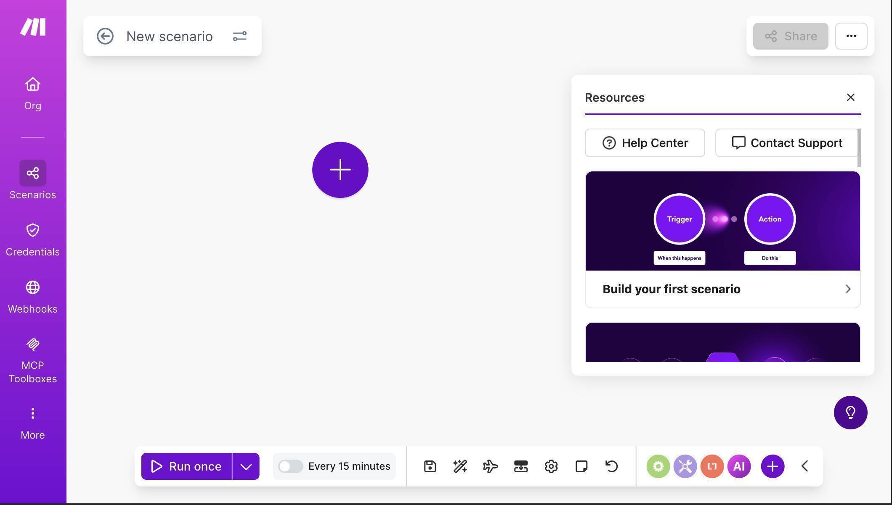
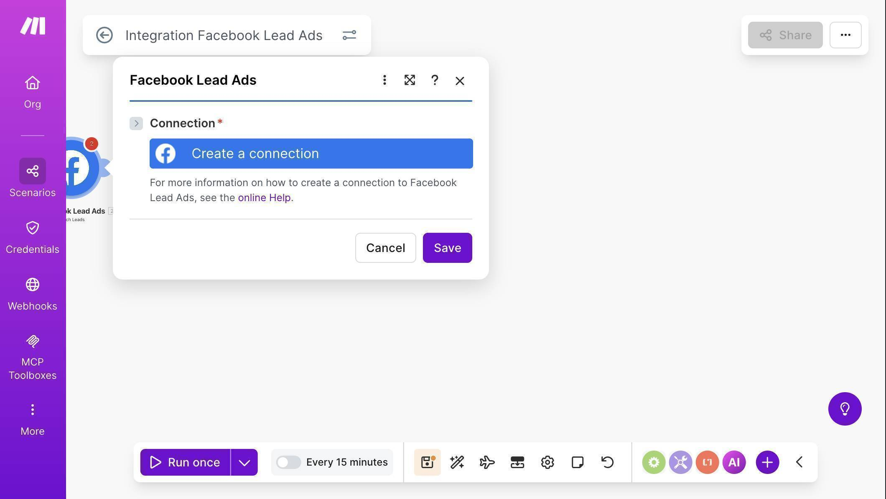
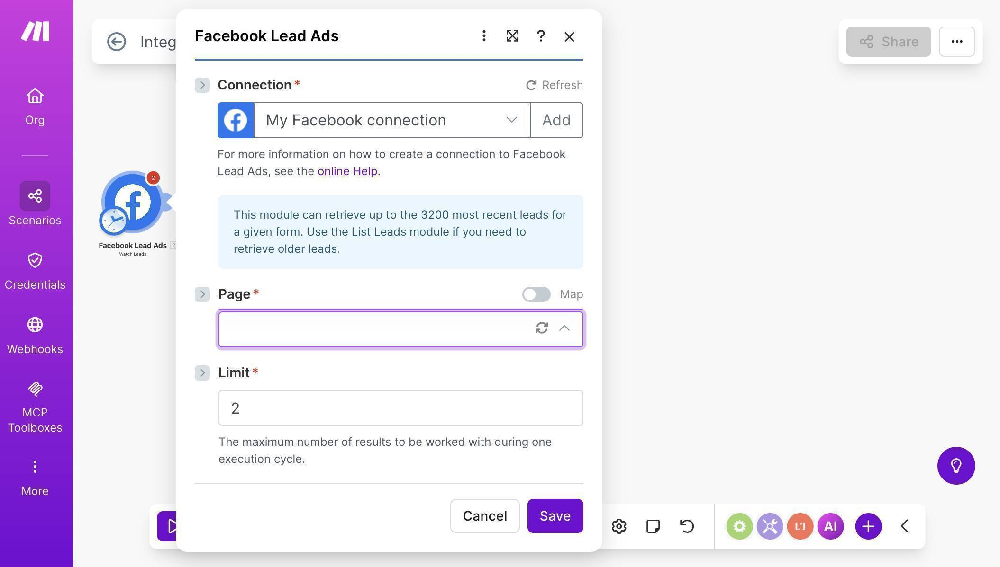
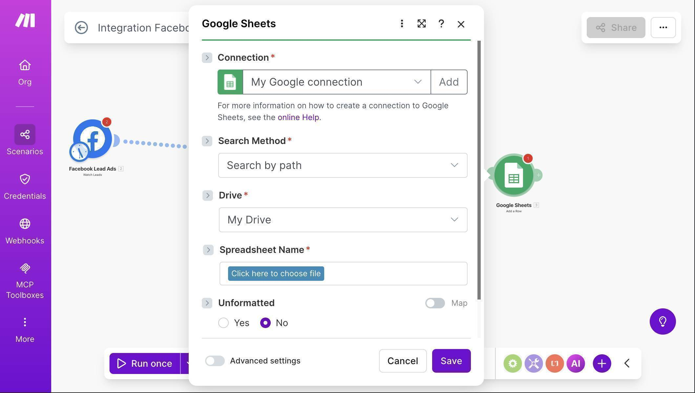
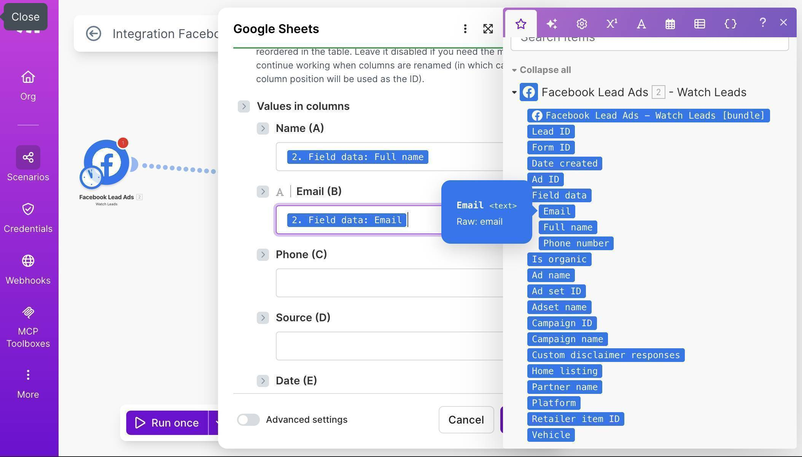
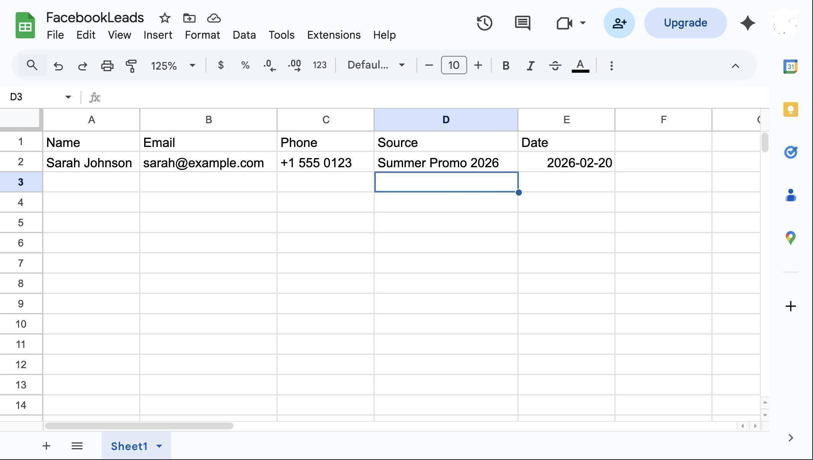

Send Facebook & Instagram Leads to Google Sheets Automatically
Every time someone fills out your Facebook or Instagram lead ad form, that lead sits in Meta's system waiting for you to manually download a CSV. By the time you respond, your competitor already called them. This Make.com tutorial shows how to connect Facebook Lead Ads to Google Sheets automatically — in real time, no CSV downloads, no manual work.
Why Manual Lead Export Is Killing Your Conversion Rate
Speed to lead is the single biggest factor in converting paid ad leads. Most businesses respond within 2-24 hours because they check Meta's Lead Center manually once or twice a day. Research consistently shows that responding within 5 minutes makes you 9x more likely to convert a lead than responding within an hour. When you're paying $5-20 per lead on Facebook or Instagram ads, slow follow-up is the most expensive mistake you can make.
What This Automation Does
Every time someone submits your Facebook or Instagram lead ad form, Make.com instantly catches that event and adds a new row to your Google Sheet — name, email, phone number, and the ad name so you know which campaign generated the lead. Your sales team sees it in real time. No downloading, no importing, no delay.

What Gets Captured Automatically
| Form Field | Google Sheets Column | Example Value |
|---|---|---|
| First Name + Last Name | A: Name | Sarah Johnson |
| Email Address | B: Email | sarah[at]company.com |
| Phone Number | C: Phone | +1 555 0123 |
| Ad Name | D: Source | Summer Promo 2026 |
| Submission Time | E: Date | 2026-02-20 |
How to Connect Facebook Lead Ads to Google Sheets
- Create a free Make.com account — no credit card required. Click "Create a new scenario" on your dashboard.
- Click the large purple + button on the canvas and search for "Facebook Lead Ads" — select "Watch Leads" as your trigger

Facebook Lead Ads module — click Create a connection to link your Facebook account - Click "Create a connection", name it anything (e.g. "My Facebook connection"), click Save — Facebook OAuth will open automatically
- Once connected, select your Facebook Page and the Lead Ad Form you want to watch

Facebook Lead Ads configuration — Connection and Page selection - Click the + button on the right of the Facebook module to add a second module — search for "Google Sheets" and select "Add a Row"
- Connect your Google account and select the spreadsheet where leads should land — choose "Search by path" and select your file

Google Sheets module connected to Facebook Lead Ads in the scenario canvas - Map the fields from Facebook to your Sheet columns — drag Full name to Name column, Email to Email column, Phone number to Phone column, Ad name to Source column, Date created to Date column

Field mapping — Facebook lead data mapped to Google Sheets columns - Click Save — Make.com will ask "From which point do you want to start?" — select "From now on" to capture only new leads going forward
- Click "Run once" to activate, then turn the scenario ON — the toggle at the bottom of the canvas

Completed Google Sheet with live lead data — Name, Email, Phone, Source and Date columns populated automatically
Frequently Asked Questions
Does this work with Instagram lead ads too?
Yes — Facebook and Instagram lead ads share the same Meta Ads infrastructure. The Facebook Lead Ads module in Make.com captures leads from both platforms automatically.
What if someone submits a lead while Make.com is not running?
Make.com checks for new leads on a schedule — every 15 minutes on the free plan, in real time on paid plans. Leads submitted between checks are queued and processed on the next run, nothing is lost.
Do I need a developer to set this up?
No. Make.com's visual drag-and-drop builder requires no coding. If you can use Google Sheets, you can build this automation.
What does "From now on" mean when setting up the trigger?
Make.com asks from which point to start processing leads. "From now on" means only new leads submitted after you activate the scenario will be captured. Choose "All" only if you want to import existing leads retroactively.